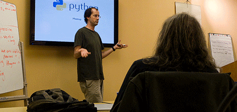
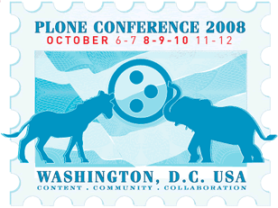

Gather, say hello & catch up
Hear one or two prepared talks about some exciting aspects of Python
We hit the bar and chat
We meet the first Tuesday of Each month at 7:00 PM at Radio Free Asia (2025 M Street Washington, DC 20036). Talks range from core language features to cutting-edge techniques in a hot web framework. Attending one of these monthly meetings is the easiest way to get a sense of the group, and you are bound to learn something! Or, even better, volunteer to present on some technology you are passionate about and teach us something new.
For more information please see: meetup.dcpython.org.
Our most popular and frequent activity is our monthly user group meeting. On the first Tuesday of each month, we gather at Radio Free Asia (2025 M Street Washington, DC 20036) to catch up on what one another have been doing, and then to hear one or two prepared talks about some exciting aspect of Python technology. Talks range from core language features to cutting-edge techniques in a hot web framework. Attending one of these monthly meetings is the easiest way to get a sense of the group, and you are bound to learn something! Or, even better, volunteer to present on some technology you are passionate about and teach us something new.
We also happily support sprints and tutorials on a regular basis. We've hosted a variety of sprints, trainings for Plone and Turbogears, and even an international conference. If you're interested in attending these sorts of activities, come to the meetings and join our mailing list; that's how we spread the word. Or, if you've got an open source project that could use a sprint or you're looking to teach the fine programmers of DC about your fantastic python library, get in touch with DC Python's board and we'll help you with space, resources, and to market your event.
If you've had all the socializing you can take, or if you just have a corporate sponsorship budget burning a hole in your pocket, we also look to raise funds for both local events and for the larger organizations that keep Python's trains running. Again, get in touch with DC Python's board and we can help you figure out what sort of sponsorship can help keep your giving aligned with your goals.
We work toward our goal of serving the DC Python user and developer community through:
DC Python is the longest continuously meeting Python-technology-focused user's group in DC, and one of the oldest in the world.
Formerly known as ZPUGDC (the Zope/Python Users Group of DC), DC Python was started in 1999 by Chris Abraham. It was later restarted and run successfully as a Plone-focused user group by Joel Burton. DC Python's first and current President and Executive Director, Alex Clark, has been an integral part of both the organization of events, as well as the promotion and growth of the group since ZPUGDC's inception under Joel's leadership. By 2006, Alex had fully assumed responsibility for running and maintaining the group and its activities and continues to lead the group (with help from many others) to the present day.

For many years, Zope was the technology that brought people to Python. Our focus at ZPUGDC reflected that primary interest. However, in keeping with the trends of recent years, we've expanded our outreach to encompass any/all Python-related technologies, subsequently re-naming our organization to DC Python in order to reflect our more current and broader outreach. We are proud of our history, our legacy and all of our names!
Over the years, we have provided the DC Python community with numerous trainings, speaking engagements, boot camps, sprints, group meetings and other related activities. However, our most significant contribution to the open-source development world to date is the very successful organization and hosting of the 2008 Plone Conference in Washington, D.C.. Over 300 participants attended events including the conference, pre-conference trainings and a post-conference development sprint. It was during that time that in order to enhance, strengthen and solidfy our outreach to the community we serve, DC Python (known legally as ZPUGDC, INC.) formally formed and organized as an official non-profit, 501 (c) 3 entity, registered in the state of Maryland. Our non-profit status enables us to serve the Python community with structure, transparency and legitimacy.
DC Python's board is comprised of volunteers from the DC Python community who donate their time and expertise to handle the logistics of running the user group's activities. The board handles:
Currently, the following people serve on the DC Python board:
Alex holds a Bachelor of Science degree in Computer Science from Loyola University in Maryland, and he is uniquely committed to the success of the DC Python organization as well as a staunch advocate for Python software in general. He provides leadership and direction in many areas of DC Python operations including technical infrastructure, event organization, and open source evangelism. He brings with him over 6 years of experience working on Python projects. Prior to becoming a full time consultant, he worked as a system administrator and network engineer.
Chris has programmed in a variety of languages but prefers the elegance of Python and the sharpness of the Python community. He supports DC Python with event coordination, technical infrastructure and planning/direction. Chris has many years experience consulting on Python, systems, and content-oriented applications, and previously worked for a dot-com startup and NASA contractors. He has a BS in Electrical Engineering from Rensselaer Polytechnic Institute.
Amy Clark brings many years of professional sales, marketing and management, administrative and financial/legal experience to the DC Python team. She is in charge of all financial, legal, and government-related (both state and federal) responsibilities, as well as maintaining the records and day-to-date operation of the organization. Amy facilitates a seamless, uncomplicated provision of DC Python's offerings and ensures the quality, accuracy and efficiency of all DC Python projects and services.
If you're interested in serving on the DC Python board, please get in touch with us! We are actively seeking new members to help us fulfill our mission to the community.
DC Python helps DC Python programmers get jobs. We allow job postings (on our meetup.dcpython.org mailing list) provided the following criteria are met:
Failure to meet these requirements will result in you or your company being banned from our list and your message being moderated so that it is not delivered.
Note: This is a work in progressDC Python members want to hear you present on a Python-related topic of your choosing, provided the following criteria are met: